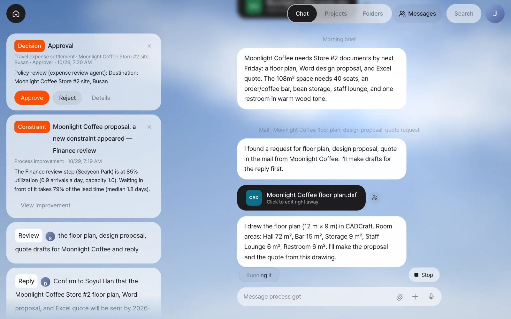
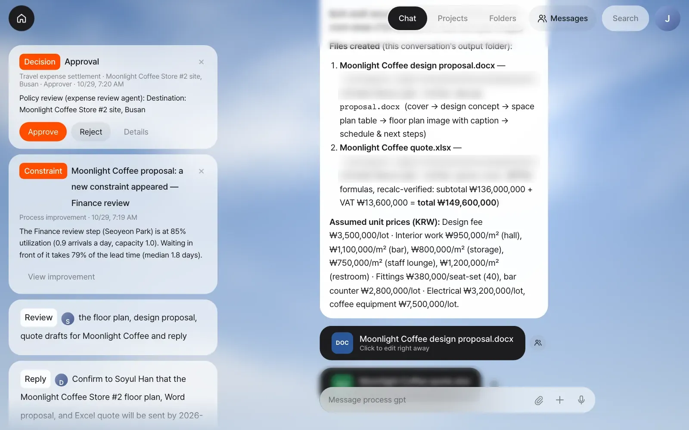
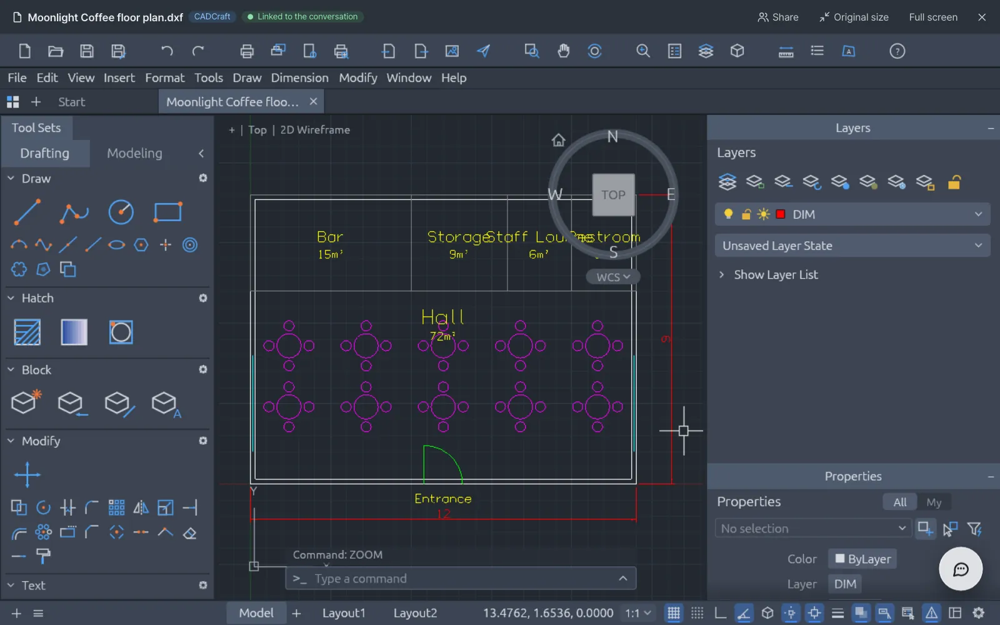
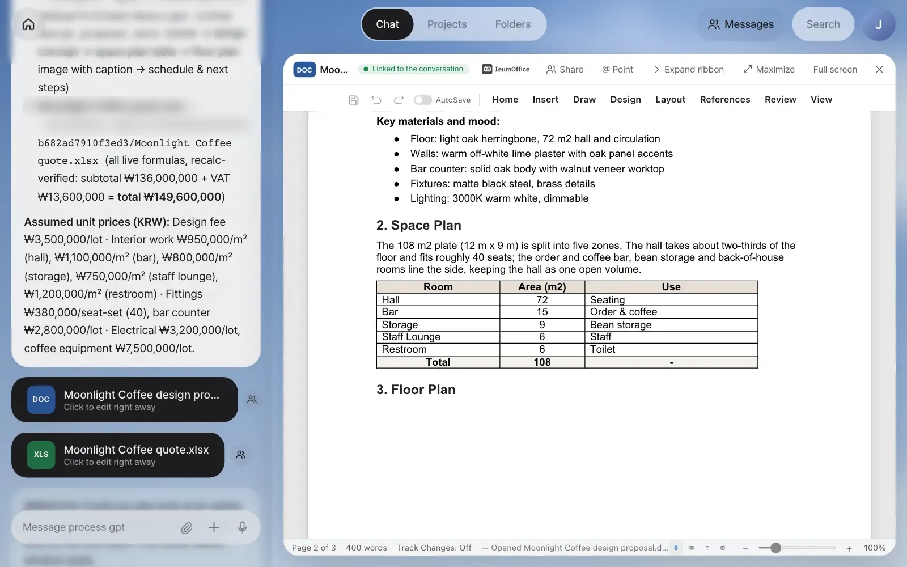
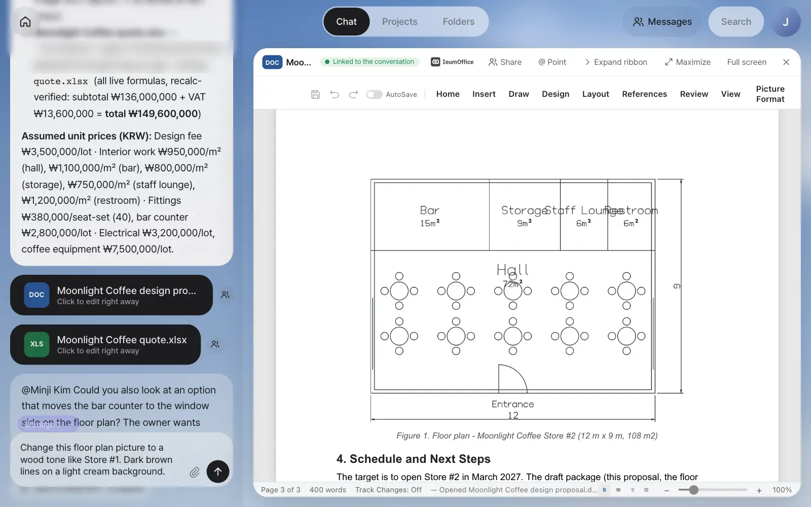
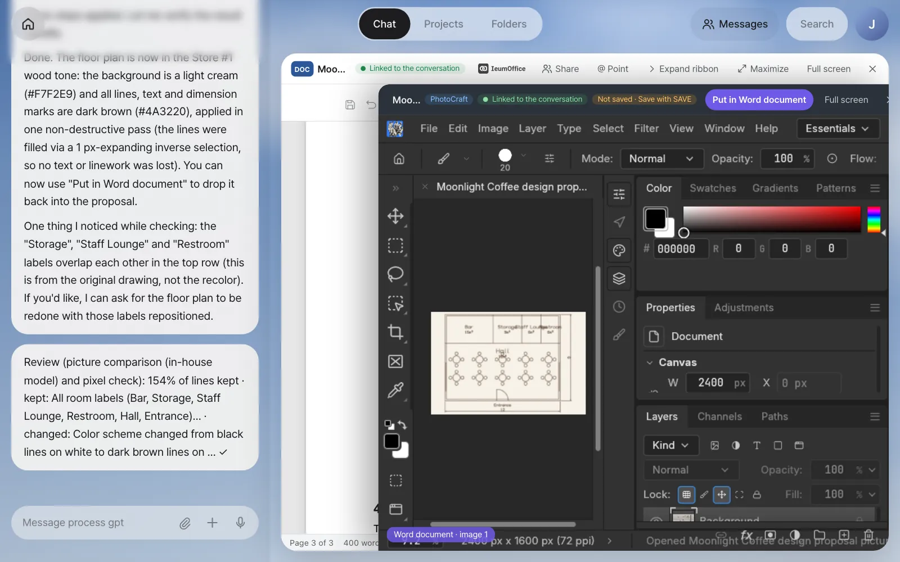
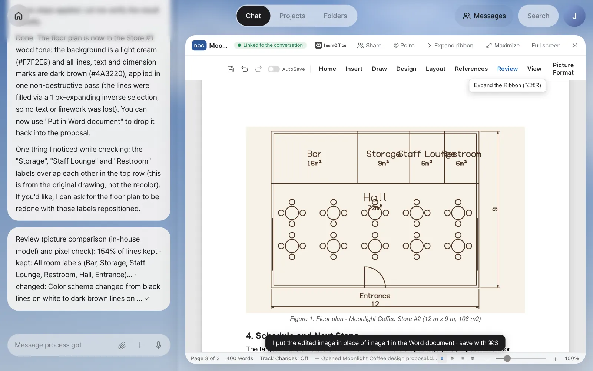
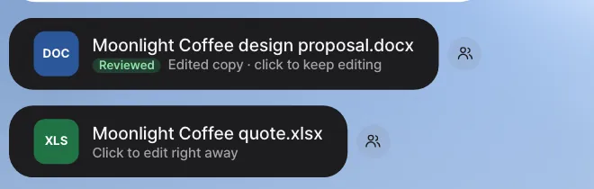
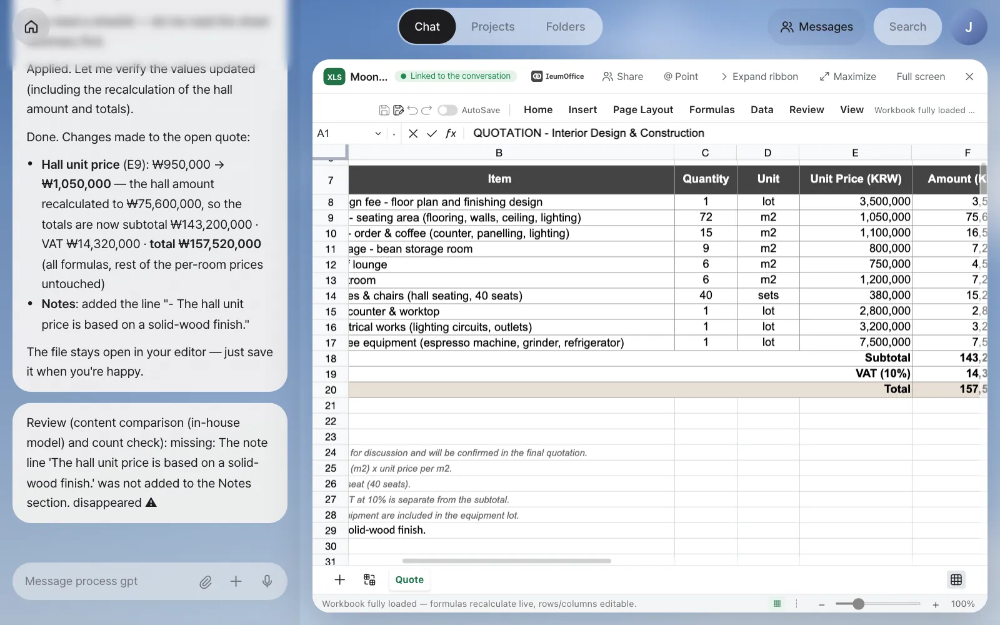
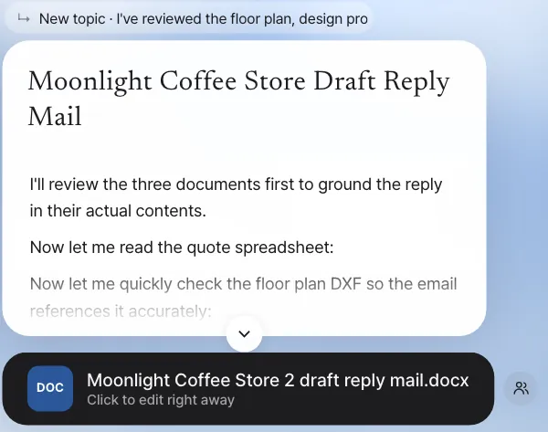

When a request email from Moonlight Coffee arrives, the assistant doesn't ask first. It makes drafts of a floor plan (CADCraft), a design proposal (Word) and a quote (Excel). You open the drafts, point at a picture to change its colors, adjust unit prices, check the notes the assistant left, and then reply.
How this chapter flows#
You connected your mailbox in Chapter 5, and in Chapters 7 and 8 you kept documents and drawings open and changed them by talking. This time you put the two together and follow, from start to finish, what happens when a customer sends an email asking for documents.
Customer email ─▶ Mail sorting ─▶ ① Floor plan (drawn in CADCraft)
"Please send a finds the │ room areas
floor plan, documents and ├─▶ ② Design proposal (Word) ─ floor plan picture + space plan table
proposal and formats asked └─▶ ③ Quote (Excel) ─ room area × price per ㎡
quote" for │
│
Home "Review the … drafts for Moonlight Coffee │
and reply" card ◀─────────────────────────┘
You: open them · point and fix · check the notes · reply
Two things matter most.
- Drafts first, no questions — When a customer asks for documents, the assistant doesn't ask "Should I make them?" It makes the drafts in advance. Whether to send them is up to you.
- All three documents share one drawing — The room areas in the floor plan go straight into the proposal's space plan table and the quote's construction quantities. The areas never end up different from document to document.
Try it 1 — the request email arrives#
An email like this comes from the Moonlight Coffee operations team.
From: Soyul Han <soyul.han@dalbit-coffee.example>
Subject: Moonlight Coffee Store #2 design proposal and quote request
We're opening Store #2 in Seongsu-dong, Seoul next March. The store is 12 m wide × 9 m deep (about 108 ㎡),
and we need a hall with about 40 seats, an order and coffee bar, a bean storage room, a staff lounge and one restroom.
We'd like the same warm wood tone as Store #1.
Could you send us a floor plan, a design proposal (Word) and a quote (Excel) by next Friday?
If you connected a real mailbox (Gmail or company mail), send the text above to your own address. If you're using the demo mailbox from Chapter 5, go to Get practice email in Settings › System (or Settings › Accounts), choose Moonlight Coffee Store #2 proposal & quote request, and click Get practice email. An email like the one above arrives.
After reading the email, the assistant lets you know in the chat with a divider.

Here's how long each draft took in our run. It can vary by a few minutes depending on the model and the server, so just wait.
| Order | Result | After the email arrived |
|---|---|---|
| Floor plan | Moonlight Coffee floor plan.dxf + a note with the room areas |
About 25 seconds |
| Design proposal | Moonlight Coffee design proposal.docx |
About 2 minutes |
| Quote | Moonlight Coffee quote.xlsx + an explanation of the unit prices it assumed |
About 2 minutes (with the proposal) |
Check: Three cards in the chat (CAD, DOC and XLS) and one Review card on Home. The areas in the floor plan note (in our run: "Hall 72 m², Bar 15 m², Storage 9 m², Staff Lounge 6 m², Restroom 6 m²") go into the proposal and quote as the same numbers.

Try it 2 — look over the floor plan and proposal#
Click the CAD card, and CADCraft from Chapter 8 opens. It shows the 12 m × 9 m outline, five rooms, ten tables with 40 chairs, the entrance and the dimensions.

Click the DOC card, and the design proposal opens in the IeumOffice Word editor. It has a cover page and a design concept written from the email. The "2. Space Plan" table is filled in with the drawing's room areas, and under "3. Floor Plan", the drawing you just made has been converted to fit a paper document, with a white background and dark lines.

It's a draft, so you'll spot things to fix. In our run, the labels "Storage", "Staff Lounge" and "Restroom" in the drawing's top row overlap each other, and the assistant pointed this out itself in the next step. You can fix the drawing by opening the CAD card and asking while it's linked, as in Chapter 8.
Try it 3 — point at the picture and switch to wood tones#
Change the floor plan picture in the proposal to warm colors like Store #1. The Word editor can't paint a picture directly, so the assistant takes just that picture out to PhotoCraft, edits it, and puts it back in the same spot.
- Turn on @ Point in the header and click the floor plan picture. A
@Image 1chip goes into the input box. - Type the rest and send:
Change this floor plan picture to a wood tone like Store #1. Dark brown lines on a light cream background. - PhotoCraft opens on top of the document (with Word document · image 1 shown at the bottom left), and then the request goes to the chat. The assistant paints the picture in the open PhotoCraft.
- When a Review note follows the answer, look at the result and click Put in Word document.


In our run, it took about a minute. The assistant used a light cream (#F7F2E9) background and dark brown (#4A3220) lines, and also pointed out that the "Storage", "Staff Lounge" and "Restroom" labels overlap in the original drawing. The review note from our run:
Review (picture comparison (in-house model) and pixel check): 154% of lines kept · kept: All room labels (Bar, Storage,
Staff Lounge, Restroom, Hall, Entrance)… · changed: Color scheme changed from black lines on white to dark brown lines on … ✓
When you click Put in Word document, the notice "I put the edited image in place of image 1 in the Word document · save with ⌘S" appears, and the picture in the document changes.

Save with ⌘S, and the card changes to Reviewed · Edited copy · click to keep editing. Hover over Reviewed to see "Review: image 1 edited in PhotoCraft and put back in the same place · 154% of lines kept ✓".

When ⌘S doesn't work right after putting the picture back
In our run, ⌘S right after Put in Word document added the edited copy at once. If the card doesn't change to Edited copy (this happened with Hangul documents in earlier versions), change one character in the document, change it back, and press ⌘S again.
Try it 4 — adjust quote prices and read the check#
The quote works out construction costs by multiplying each room's area in the floor plan by a price per m². The hall will be finished in solid wood, so raise its price.
- Open the quote card, scroll the sheet to the right until the Unit Price (KRW) column shows, turn on @ Point, and drag to select E9:E13, the per-room prices (
@E9:E13). - Type and send.
Of these per-room construction prices, raise the hall to ₩1,050,000 and leave the rest as they are. Also add a line to the notes: "The hall unit price is based on a solid-wood finish."

This time, though, the review note was a warning.
Review (content comparison (in-house model) and count check): missing: The note line 'The hall unit price is based on
a solid-wood finish.' was not added to the Notes section. disappeared ⚠
Look at the screen, and the note is there in row 29. The check got it wrong. As this shows, the check is a way to point out where a person should look again, not a final verdict. When you see ⚠, check that part with your own eyes, and if something really is missing, just say "Put the missing note back in." The card gets Reviewed for ✓ and Needs review check for ⚠. When you've finished checking, save with the save icon in the toolbar.
What the check looks at#
| Target | What it compares |
|---|---|
| Pictures (PhotoCraft, VectorCraft) | How much of the lines remain between before and after (below 70% counts as a loss), and an in-house model compares the before and after pictures with the request |
| Drawings (CADCraft) | Object count by type (for example, "objects 16→18 ✓") |
| Sound and video | Track and clip counts |
| Word and Hangul | Text length, paragraphs, tables, table rows, picture count, and an in-house model's before-and-after comparison |
| Excel | Filled cells and formula count (for example, "20 formulas kept ✓") |
If the request is about reducing something, like "delete" or "remove", the reduction isn't counted as a loss. If lines disappear while recoloring a picture, the assistant tries once more another way (painting based on the background color), and if that still fails, it reverts to the original and tells you.
Try it 5 — the reply email draft#
When you've checked everything, click the Review … the floor plan, design proposal, quote drafts for Moonlight Coffee and reply card on Home. The request in the card ("I've reviewed the floor plan, design proposal, quote drafts for Moonlight Coffee. Please write a draft reply mail.") goes to the assistant as is, and a few minutes later the draft reply arrives as a document card.

The draft from our run (about 2 and a half minutes) confirmed delivery by Friday, 6 November, summed up the five rooms and the wood concept, gave the schedule up to the March 2027 opening, noted that the unit prices are draft figures valid until 28 November 2026, and asked for a short review call. But it quoted the total as ₩149,600,000, the total the file still had stored from before the hall price change, not the recalculated ₩157,520,000. A check like this right before sending is easy to forget, so in the next chapter you'll save it as a skill that runs the same way every time (Chapter 10).
If the card's request lands in another conversation
The card's request goes through the context router like any message (Chapter 4). In our capture account, which already had a "Moonlight Coffee Store 2" shared-folder conversation from a later chapter, the router sent it there, and the assistant reviewed that folder's files instead. The screenshot above comes from sending the same request in a fresh conversation with the three drafts attached. If the answer talks about other files, attach the drafts and send the request again.
After a formal process is registered
If this work is discovered as a recurring flow and registered as a formal process in Chapter 19, emails of the same kind start that process instead of ad hoc drafts ("I'll handle the … mail with the registered 'Design proposal & quote response' process."). Each step gets an assignee and an agent, and the finance review goes to Finance. The screens in this chapter show the state before any process is registered.
Watch the video
The whole flow of this chapter is in the video From one email to design, proposal and quote.
Check your understanding
- In the proposal's space plan table, you want the "Bar" row to read "Order & coffee bar". How would you ask to fix just that table?
- A request to change the floor plan picture's colors goes to PhotoCraft, not the Word editor. Where are "delete the picture" or "move it to the right" handled?
- A review note ended with ⚠. What should you do first, before asking again right away?
Answer
- Turn on @ Point, click the table to put in the
@Table 1 (Room · Area (m…)chip, and then type something likeIn this table, rename the Bar row to Order & coffee bar.The assistant reads the table in the open Word document and fixes it right there. (As in Chapter 7, the Word editor may rebuild the table to change text inside its cells, so check the result before you save.) - In the Word document. Only requests that change the picture itself are taken out to PhotoCraft. Requests that change the layout within the document, like deleting, moving, resizing or captions, stay with the document.
- Check that part on the screen with your own eyes. Sometimes the check gets it wrong, as in our run. Ask again for what's missing only when it really is missing.